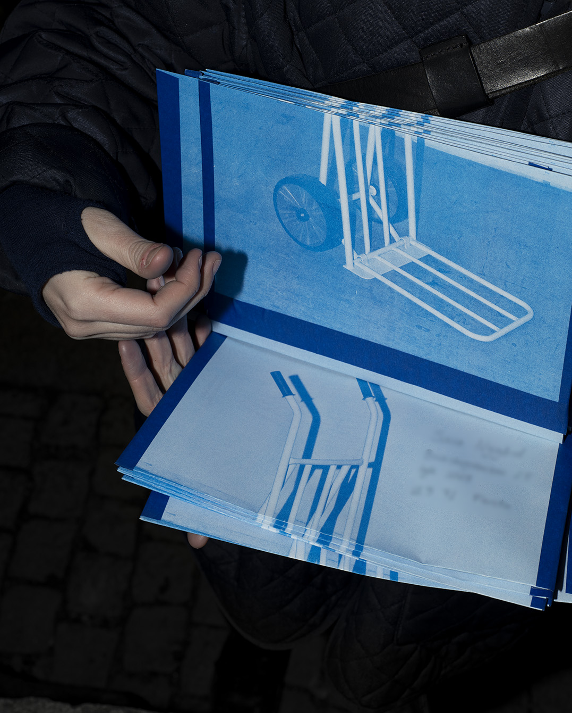
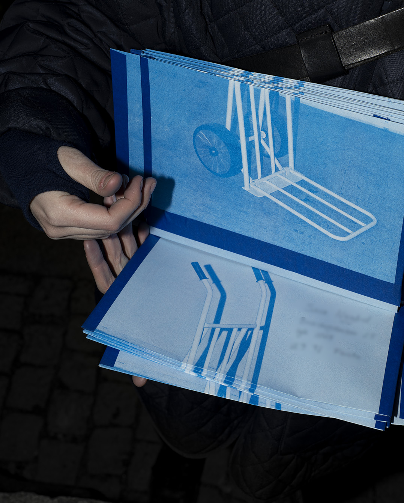
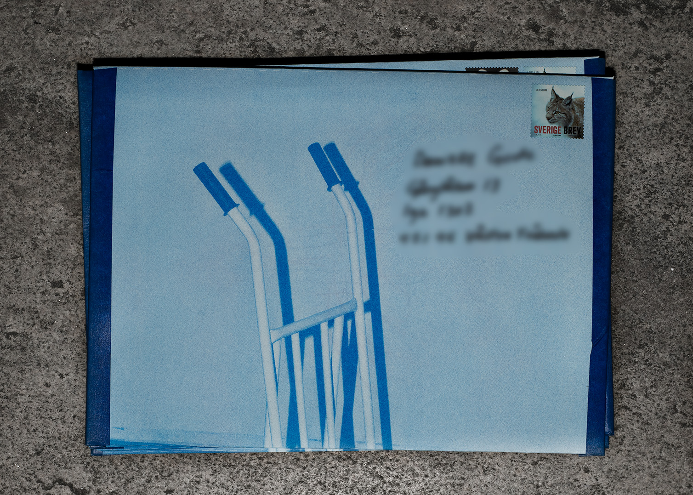
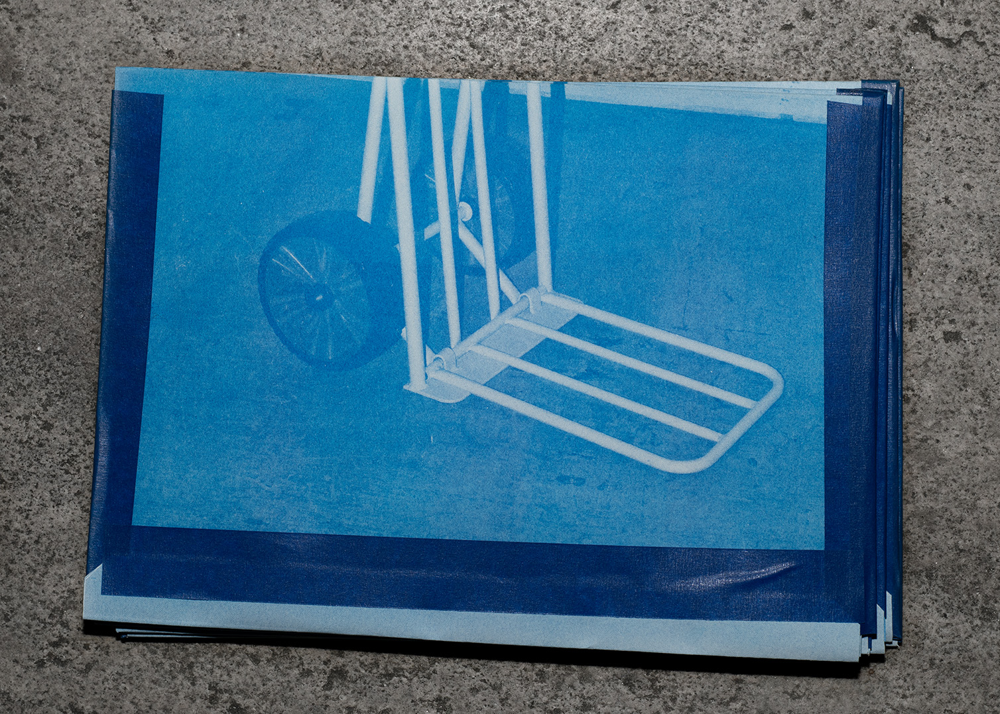
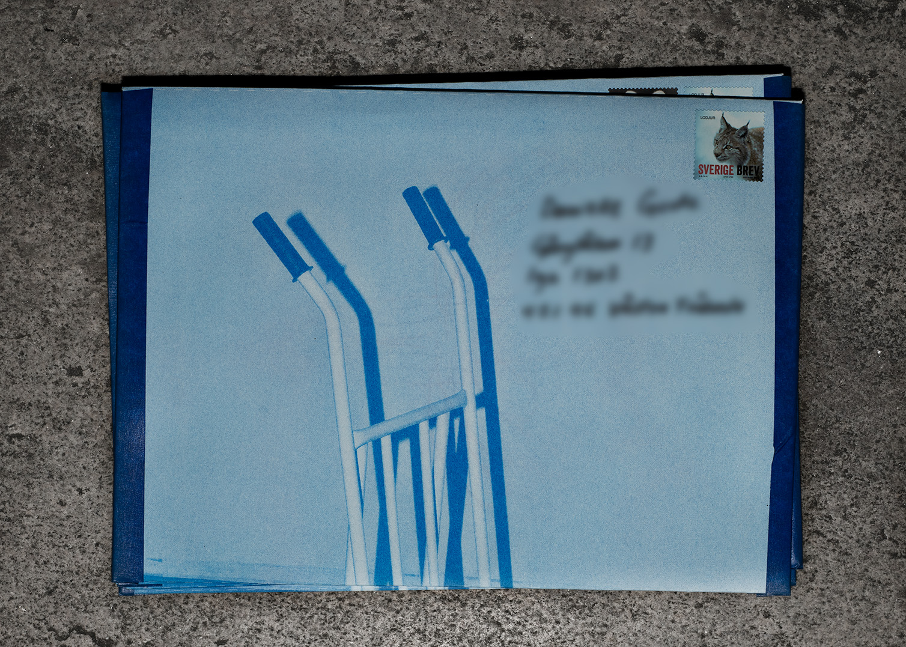
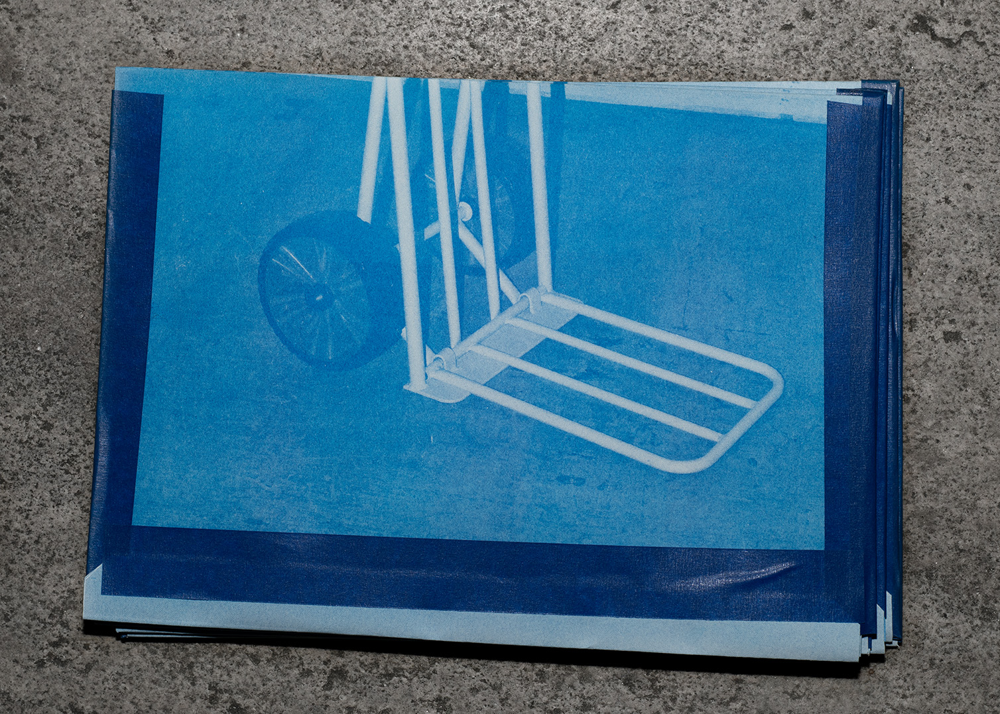

 



Hej Anton! Vi är väldigt glada för att du tackade ja till att göra zinet under mammuttrædet som är Galleri Pirras första publikation. Kan du berätta lite om projektet? Och hur du upplevde att förhålla dig till zinets format?
Tack! Det har varit riktigt roligt och intressant att arbeta med er och detta projekt. Projektet utgår ifrån marken omkring ett Mammuttræe beläget i en botanisk trädgård en bit utanför Köpenhamn. En speciell botanisk trädgård då den är ganska vild, vild på så sätt att den växer utan överdriven mänsklig inblandning. Angående formatet på zinet har jag blivit mycket fascinerad över det där med att bläddra bland sidorna, det är helt klart något jag kommer att ta med mig till framtida projekt. Jag har också fått dyka ner i risoprintets historia och fått förklarat för mig att det ursprungligen kommer ifrån Japan. Ett land med en kultur och estetik jag länge har varit inspirerad av.
När vi kollar igenom dina projekt ser vi hur du samlar på data, hur ser du på data i relation till din konstnärliga praktik?
Min praktik grundar sig i abstrakt måleri med fokus på teckning. Jag är intresserad av system som kompositioner och det som uppstår när olika system och regler förs in i en målerisk process. Mitt arbete just nu cirkulerar omkring kartografi. Kartografi är för mig intressant ur ett måleriskt perspektiv då både måleri och kartografi undersöker olika möjligheter i att avbilda en tredimensionell fysisk form till en tvådimensionell yta. I denna process blir datan som jag samlar in anteckningar över det jag arbetar med.
Vi är nyfikna på den metod du använt exempelvis i under mammuttrædet, kan du berätta lite om hur du går tillväga i din process och hur den kom till?
Förra året gick jag en kurs om insekter på Linnéuniversitetet. Under kursen kom jag fram till att det som intresserade mig mest var landskapet insekterna rörde sig i. Intresset för ”insekts-landskap” utvecklades senare till idén om topografiska kartor över mycket små områden. Min process är ganska hemmabyggd. Jag har själv snickrat ihop ett fyrkantigt rutnätsverktyg som jag placerar över den bit av mark jag vill mäta. Jag stoppar därefter ned en mätpinne i varje ruta och på så sätt kan jag se hur marken förändrar sig ifrån ruta till ruta. Den information jag får ifrån denna process använder jag som en grund till olika projekt.
I dina verk synliggör du landskap och avgränsade platser, hur hittar du dem och vad betyder dem för dig?
Områden väljer jag med en idé om dess förändring utifrån tid. Då jag avbildar små utsatta landskap kommer troligtvis inte ursprunget till motivet att finnas i samma sammansättning en längre tid. I efterhand tror jag att platserna betyder något extra för mig då de antagligen ser helt annorlunda ut precis nu. Kanske tränar jag mig i att försöka uppskatta att allt är i konstant rörelse.
Hur ser du på att ge något så litet, som området under ett träd, så mycket plats? Ser du världen i små fraktioner?
Jag tror det handlar om att ge mig själv tid till att observera. Det vill jag gärna ge mycket plats. Egentligen handlar det nog om perspektiv. Hur något smått kan bli stort och något stort smått; beroende på hur, vem och från vilket perspektiv man ser på världen.
Vad inspireras du av nu?
Jag har länge inspirerats av det som går snabbt. Nu inspireras jag av sådant som går långsamt.
– Galleri Pirra X Anton Josephson
Tryck av Obra Press